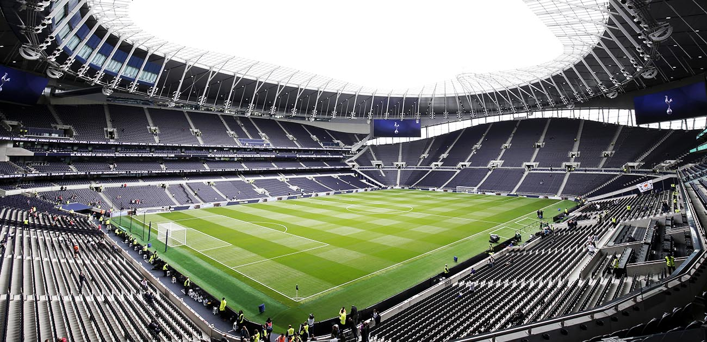
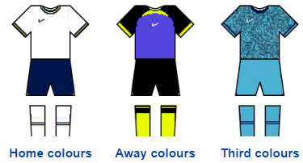

Tottenham Hotspur FC

Tottenham Hotspur Football Club, commonly referred to as Tottenham or Spurs, is a professional football club based in Tottenham, London, England. It competes in the Premier League, the top flight of English football. The team has played its home matches in the 62,850-capacity Tottenham Hotspur Stadium since April 2019, replacing their former home of White Hart Lane, which had been demolished to make way for the new stadium on the same site.
Founded in 1882, Tottenham's emblem is a cockerel standing upon a football, with the Latin motto Audere est Facere ("to dare is to do"). The club has traditionally worn white shirts and navy blue shorts home kit since the 1898–99 season. Their training ground is on Hotspur Way in Bulls Cross, Enfield. After its inception, Tottenham won the FA Cup for the first time in 1901, the only non-League club to do so since the formation of the Football League in 1888. Tottenham were the first club in the 20th century to achieve the League and FA Cup Double, winning both competitions in the 1960–61 season. After successfully defending the FA Cup in 1962, in 1963 they became the first British club to win a UEFA club competition – the European Cup Winners' Cup. They were also the inaugural winners of the UEFA Cup in 1972, becoming the first British club to win two different major European trophies. They collected at least one major trophy in each of the six decades from the 1950s to 2000s – an achievement only matched by Manchester United.
In domestic football, Spurs have won two league titles, eight FA Cups, four League Cups, and seven FA Community Shields. In European football, they have won one European Cup Winners' Cup and two UEFA Cups. Tottenham were also runners-up in the 2018–19 UEFA Champions League. They have a long-standing rivalry with nearby club Arsenal, with whom they contest the North London derby. Tottenham is owned by ENIC Group, which purchased the club in 2001. The club was estimated to be worth £1.67 billion ($2.3 billion) in 2021, and it was the ninth highest-earning football club in the world, with an annual revenue of £390.9 million in 2020.

Tottenham Hotspur Stadium
